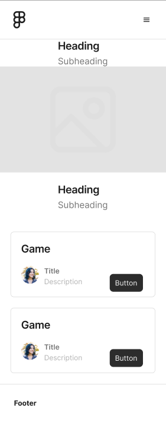
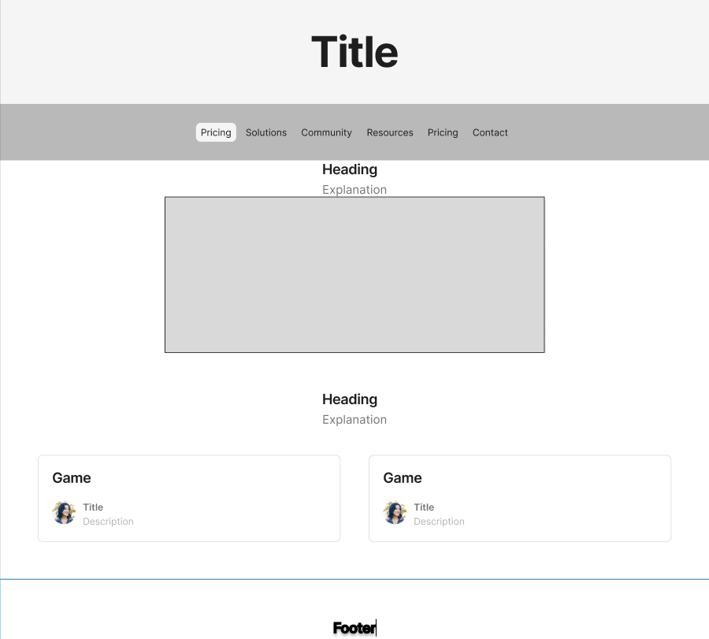

Site Plan
This site plan outlines the structure and content of the RPG Hub website.
Site Name and Purpose
Site Name: RPG Hub
Reason for Name: The name "RPG Hub" was chosen because it reflects the central place where RPG enthusiasts can gather to explore games, connect with the community, and access resources.
Site Purpose: The purpose of RPG Hub is to provide a comprehensive resource for RPG enthusiasts, including information on popular RPG games, community engagement opportunities, and a collection of resources to enhance the RPG experience.
Color Schema
Primary Color: #222222 (used for headers and navigation)
Secondary Color: #FFC107 (used for buttons and highlights)
Typography
Primary Font: 'Roboto', sans-serif (used for body text)
Secondary Font: 'Playfair Display', serif (used for headings)
Pages
- Home (index.html)
- Header with navigation menu and hamburger icon
- Main content includes:
- Introduction section with a welcoming message and banner image
- Highlights section showcasing popular RPGs
- Call-to-action section encouraging users to join the community
- Footer with the current year and last modified date
- Games (games.html)
- List of popular RPGs with images, descriptions, and links to learn more
- Community (community.html)
- Information about the RPG community, how to join, and benefits of membership
- Resources (resources.html)
- Collection of resources for RPG enthusiasts, including guides, tools, and articles
Scenarios
- Scenario 1
- User Persona: Emma, a 22-year-old university student and avid RPG gamer who enjoys discovering new RPG games and connecting with other gamers.
- Scenario Question: Emma is looking for a new RPG game to play during her summer break. She wants to find detailed reviews and recommendations from fellow RPG enthusiasts. How will Emma use the RPG Hub website to discover new games, read reviews, and connect with other gamers for recommendations?
- Scenario 2
- User Persona: David, a 35-year-old game developer and dungeon master who is searching for creative ideas and resources to enhance his tabletop RPG campaigns.
- Scenario Question: David needs fresh ideas and resources to create an engaging campaign for his tabletop RPG group. He is looking for story ideas, character inspirations, and downloadable resources. How will David navigate the RPG Hub website to find the inspiration and resources he needs for his campaign?
Wireframes
Mobile View

Desktop View

Join the Community
Connect with other RPG enthusiasts, find game groups, share your adventures, and more.
Join Now